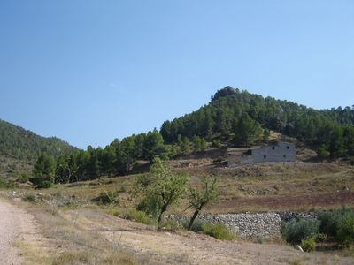
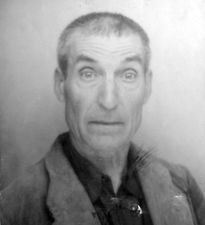
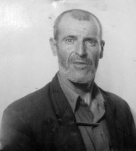
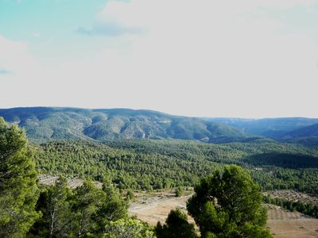

Finalizando el verano de 1948 los guerrilleros de Levante y Aragón llamaron a la puerta de una masía en el paraje de El Oroque, del término de Cofrentes. Se trataba de una pequeña unidad de expansión hacia el suroeste de la provincia de Valencia. Su presencia venía propiciada por la estrategia de combate político y de dinámica activa de supervivencia en el anhelante devenir de la Agrupación. Ya se habían habilitado, al tiempo que quemado, otros núcleos. Peregrín Pérez "Ricardo" desde el mes de febrero acababa de hacerse cargo de la dirección, pero eran "Pepito" y en buena medida "Grande" los orientadores de la dimensión de la lucha; además, y la noticia no llegará a los campamentos de Cofrentes hasta final de año, "Ricardo" fallecería en La Ginebrosa (Teruel) en el mes de agosto (8/8/48).
En la Masía del Oroque los trataron bien y no hubo denuncia alguna. Uno de sus integrantes, y conocedor de la comarca al ser nativo de Campo Arcís, Emilio Cardona "Jalisco", recordará con hondo aprecio esta relación. De igual manera se refiere a la misma otro de los componentes del grupo "Ventura". Previamente, como veremos, y ante la decisión de asentar definitivamente una partida en este enclave geográfico, como solía acontecer cuando se ampliaba una zona, se tantearon a ciegas otras casas habitadas que por su ubicación ofrecían buenas posibilidades de ayuda discreta. Ya por estas fechas, los conocimientos y lazos con fuente en el trato familiar o en las afinidades políticas estaban más que vigilados y represaliados. El año 1947 había sido muy duro, y el actual de 1948 se completaba con la misma dosis de férreo y ejemplarizante control basado en el miedo. Tan solo, en este espacio, se podía recurrir en las proximidades de La Pesquera al infatigable conocer de Basiliso Serrano "Fortuna", que siempre sabía algo más de los convecinos con los que se encontraban. Pero por ahora "Fortuna" actúa en la unidad de "Segundo", en las Dehesas de Cuenca. Desde el momento en el que se llame a la puerta del Oroque, y tras que en una reunión posterior "Chaval" obligara a una revisión crítica de las posibilidades de colaboración, la masía pasaría a ser el punto de apoyo fundamental para el futuro no solo de este grupo del 11º Sector, sino para buena parte de la historia de todo él e incluso, en no poca media, para la dinámica de la propia Agrupación. En realidad, casi podríamos decir que este punto de apoyo fue básico para toda el AGLA más que para su propio Sector. Debido en buena media a que éste, dirigido siempre por "Grande", fue el centro natural de la Agrupación.
La Masía del Oroque se halla situada en el término de Cofrentes (Valencia), en el paraje así denominado. Colinda con la de Segundo "El Pijón", y en frente tiene las de El Quince y El Cura. Desde antes de la guerra pertenecía a la familia de los "Paco". Tanto esta propiedad como otra cercana, el Cañizo, que había sido adquirida por 15.000 pesetas. El Oroque estaba a nombre de Esteban Molina, y el Cañizo al de su hermano Francisco, el cabeza de familia.
|
|
| Masía de El Oroque (1990) (Documental, Canal 9) |

El Oroque se utilizaba como vivienda habitual, en tanto que el Cañizo se dedicaba a cobertizo para un numeroso rebaño de cabras blancas que habitualmente cuidada Esteban. Disponían asimismo de otro rebaño de ovejas que solían recogerlas en la cuadra de la casa principal. El cereal, olivo y viña eran sus cultivos. Las labores, en estos años, se realizaban con mano de obra familiar y con caballerías. Dos o tres mulos cumplían este propósito. La industrialización del tractor y las cosechadoras ya empezaban a llegar a Cofrentes. La vivienda, construida en la ladera de una colina con orientación al norte, para lo que se aprovechaba el desnivel natural, estaba formada por dos plantas y cámara. En la inferior, con entrada desde el oeste, se dedicaba a bodega y zona de las caballerías. En la superior, a nivel del camino de herradura, la vivienda y la puerta de entrada a la misma con orientación sur, con dos habitaciones y cocina. En lo alto, la cámara. A su lado este existía el corral de las ovejas y otra cuadra que se añadiría posteriormente. A media ladera, en su relieve, existía y existe un pronunciado peñasco rodeado de pinar (como en una de las fotos últimas puede apreciarse), desde donde los guerrilleros más de una vez harían vigilancia para asegurarse de que en su interior no se encontraban los guardias. Por estas fechas la habitaban sus propietarios, el matrimonio Molina-Delgado, de los que en este estudio se incluyen dos fotografías del año 1946, dos años antes de la llegada de los guerrilleros. La familia estaba formada por Francisco Molina Mateo (natural de Casas de Ves) y Adelina Delgado Correcher, en guerrillas conocida como de "La Madre", que contaba con 44 años en 1952, y era natural de Cortes de Pallás. Adelina Delgado "una mujer rechonchita y vivaracha, con bata negra y el pelo del mismo color recogido en un moño que se sujetaba con unas horquillas en el cogote, no contaría más allá de los cuarenta y cinco años; no los aparentaba, como toda mujer campesina, se le podían echar cinco o seis años más encima; era la que hacía todas nuestras compras, ayudaba en ocasiones por sus dos hijos mayorcitos atraídos por un no sé qué de aventura y peligro que los animaba y entusiasmaba", escribirá José Manuel Montorio "Chaval" en su impagable libro de memorias Cordillera Ibérica. En la casa convivía el matrimonio con cinco hijos: Francisco, Pepe, Vicente, Segundo y Maruja, además del hermano del cabeza de familia, el pastor Esteban Molina, y en ocasiones una abuela con domicilio en Cortes de Pallás. Los tres hermanos mayores, sobre todo Paco Molina, colaborarían frecuentemente con los guerrilleros tras que un domingo por la noche y al calor de un puchero de olla, en el tiempo en el que se acoge a "Blanca" en la masía, "La Madre" les declare a sus hijos que la gente que cena con ellos son los guerrilleros ("José, "Vicente", "Jacinto"…). No obstante, su vida, al ser menores de edad, era la de cualquier joven y, así, solían trasladarse los dos mayores, Paco y Pepe, al atardecer a Cofrentes donde dormían en su casa de la calle Pelayo, para asistir a la escuela al día siguiente. Sus maestros fueron el tío Ramiro, un profesor particular entendido en electricidad, por las tardes, y don Enrique. Pero también en bastantes ocasiones se volvían a la masía a dormir. Y no fue extraño, por ello, que les saliesen al paso tanto guerrilleros como miembros de la pareja de civiles. Pero a Paco Molina, siempre con la naturalidad que le caracteriza, nunca pudieron confundirle, como tampoco librarse el chiquillo de más de una bofetada por parte de algún guardia como respuesta a su franqueza. Desde su llegada en el mes de septiembre todos los meses los guerrilleros de la partida de "Chaval" y "Jalisco" estarán suministrando en ella, con mínimas temporadas de alejamiento por cuestiones de precaución ante las diversas coyunturas que en su entorno se sucederán.
El punto de apoyo del Oroque fue habitualmente conocido como Casa de la Madre. "Chaval" es quien nos da la pista para la aclaración de este apodo, como ya precisé en mi libro Los guerrilleros de Levante y Aragón. El sobrenombre guerrillero de su masía obedece a razones personales extraídas de la literatura. Es "Angelillo" quien en 1949, tras recibir en el punto de apoyo de los tíos de "Medio Mullao" un libro para su lectura titulado Historia de una familia de proletarios a través de veinte siglos, y quedar impresionado por la descripción que su autor realiza de uno de los personajes principales a quien denomina como la Madre de los Campamentos, y caracteriza como cariñosa, inteligente, solidaria y enérgica, un día de paso por el Oroque se atrevió a decirle a su dueña: "Es usted como la Madre de los Campamentos de un libro que he leído", y de ahí el apodo de la casa fundamental para la subsistencia en todos estos años finales del AGLA. Pero en esta misma línea de fortalecimiento de los exiguos puntos de apoyo con los que el grupo de "Chaval" y "Jalisco" contó hasta su retirada, todo no fueron brazos abiertos.
En la historia de la relación guerrillera con la Masía del Oroque podemos diferenciar cuatro etapas. La primera de contacto, una segunda de asentamiento, la de llegada del Comité Regional y por último la de evacuación.
Con todo, hay un episodio anterior muy significativo, y al que ya me referí en mi escrito sobre en "El maquis en Los Isidros" y que se puede consultar en estas mismas páginas digitales. Me refiero al grupo o batallón de 40 guerrilleros al mando del madrileño Isidoro Martínez, que pasaría la frontera francesa el 9 de octubre de 1944 por el puerto de Benasque. Dentro del operativo denominado Reconquista de España su misión era la de participar en la acción del Valle de Arán y tomar algunos pueblos. La mitad del grupo se adentraría en el interior de España, separándose en varias formaciones menores antes de abandonar definitivamente la provincia de Huesca, dada la dificultad de encontrar apoyos y alimentos. La voluntad de estas unidades no era otra que la de contactar con los núcleos guerrilleros del interior, especialmente de la zona Centro-Extremadura. Sin embargo su recorrido y fortuna sería desigual y a la postre todos resultarían detenidos o muertos, sin que en ningún caso las investigaciones posteriores de aquellos tiempos, y de los actuales, los haya identificado como, en origen, la misma unidad de guerrilleros de la operación Reconquista.
Uno de estos grupos parece ser el formado por José Andrés Benito Vindel, nacido en Sacedón (Guadalajara); Esteban Rueda de la Hera, de Novés (Toledo); y los hermanos Antonio Rodríguez González y Eulogio Rodríguez González, de Espiñeiro (Orense). En el Pajar del tío Corzo (13/1/45) fallecerán los dos primeros, y en Huerta de Marojales (27/1/45) el primero de los hermanos, siendo detenido el segundo de ellos, y por ende el primer maqui que ingresa en la cárcel provincial de Cuenca. Sin embargo, el grupo que por estas mismas fechas llega hasta Cofrentes lo integran ocho guerrilleros. Tras los consiguientes enfrentamientos con el ejército, se adentrarían en el interior de España. Al poco dos se separan: Antonio Luque Serrano y Juan José Cruz Cruz, siendo detenidos ambos el 20 de diciembre en Llanera de Ranes. Los otros seis componentes llegarían hasta Cofrentes, aunque antes, el día 22, se habían dejado ver en Andilla, en las Bodegas de Pardanchino, en casa de Daniel Domingo Veintimilla. En Cofrentes, como señalamos, en la Partida de Los Robles, al noroeste de su término municipal, en una pequeña caseta sita en finca propiedad de la señora Visitación que era familia de la casa del Oroque, y muy próxima a la masía de Malespardeñes, tendrá lugar el enfrentamiento. La masía Malespardeñes estaba habitada por varias familias, no así la caseta de la señora Visitación que sólo se ocupaba en las labores de verano. Es en Malespardeñes donde los guerrilleros habían solicitado asistencia de comida. A las diez y media de la mañana del día 10 de enero tuvieron el último enfrentamiento con la guardia civil al mando del capitán Julián Bonilla, y donde ya se hallaba presente uno de los cabos más activos en la lucha contra el maquis coordinada desde Arrancapinos, Juan Cebrián. Cuatro de los seis guerrilleros serían detenidos: Nemesio Pla Pastor y su hijo Gastón Pla Pallarés, Cosme Caravaca González y José Camacho Mena. Los dos últimos, que lograron huir, Francisco Romeralo Serna, herido (en foto de grupo en la Modelo de Valencia), y el jefe del grupo, Carrión Robles Dosal, lo serían tiempo más tarde. Romeraldo en Millares el mismo día 10 de enero, y Robles en Alcoy en el 29 de marzo de 1945. Se trata de un grupo semejante a los de "Capitán" y "Delicado", pero que en este caso no se incorporaría a la estructura de la AGL. La denuncia de su presencia la había efectuado Julián "Malespardeñes" quien habitaba, como decimos, en la masía de dicho nombre junto con otros hermanos y que distaba no más de 500 metros de la casita de campo de la Sr. Visitación. Esta última construcción, de una sola habitación, se ocupaba solamente en tiempos de labor, pues sus propietarios vivían en Cofrentes. La comandancia, como gratificación, le compraría un macho a Julián "Malespardeñes". Tiempo después, en el apogeo del AGLA, "Jalisco" junto con el marido de "La Madre" se personarían ante la puerta de su domicilio en el propio Cofrentes, para ajusticiarlo, pero sería Paco Molina quien convenciese al guerrillero de Campo Arcís a fin de que desistiese de su idea por el compromiso familiar que le acarreaba, salvando de esta manera la vida del denunciante.
La presencia definitiva y el trato casi quincenal y hasta semanal con el grupo guerrillero de sus entornos se realizará a partir del otoño de 1948. Dos años llevaban ya los guerrilleros en su dinámica de acción contra el franquismo más demoledor. Tras abandonar los cuarteles de invierno, el llamado Campamento Escuela en los Montes Universales que había sido asaltado a finales de diciembre de 1947, las fuerzas guerrilleras del 11º Sector se habían establecido en las orillas del Turia y hasta en los lomas del Pico de Ranera. Desde allí se relanzaría la consolidación estable de un grupo en el entorno de Cofrentes con dinámica de acción más precisa en su perímetro (Gallinera, Cortes, Sierra de Enguera, Grossa) que en la planicie de Requena y Utiel, pues tras su actividad en 1946 y en ocasiones en 1947 queda a expensas de comarca de tránsito para enlazar o bien con el 5º Sector en la zona de La Pesquera, o internamente con el 11º en las vertientes del Turia con miras a abastecerse en Calles, en Tuéjar, en Santa Cruz de Moya o en Mas del Olmo.
|
|
|
| Esteban Molina y Paco Molina en el interior de la Masía de El Oroque (Fam., y AIMV) |
El primer intento de posicionarse en el perímetro de Cofrentes, y remitimos en todo este relato a Los guerrilleros de Levante y Aragón, se inicia con "Jalisco", "José", "Angelillo", "Larry" y "Jerónimo" el 19 de marzo de 1948. Habían partido del campamento de Chera. Pasarán el día 20 de marzo por Enguídanos, donde "José" y "Jalisco" colocarán una carga explosiva en la vía de tren al tiempo que el resto entra en casa del alcalde y consiguen algo de comida y una escopeta. Al llegar a las retorcidas curvas de Contreras intentarán un control de automóviles. Lo precipitado de la acción y los pocos efectivos con que contaban les obliga a retirarse al momento tras que apenas si puedan tirotear a un coche que no respeta la señal de alto. Era el 23 de marzo. Su siguiente decisión les lleva a actuar en la casa de campo de un vecino de la zona de quien "Jalisco" debía tener información de que era un chivato. Tras reunir a los moradores requisan algo de comida y varias escopetas. Finalizada esta acción sus miras de alcanzar Cofrentes quedan en suspenso. Para estar de vuelta en la fecha señalada giran ciento ochenta grados y se encaminan al campamento de partida. Por estas mismas fechas, el que luego será su jefe de grupo, "Chaval", acaba de personarse en La Yesa y Canales.
En esta etapa de contacto, será a mitad del mismo mes de abril cuando, tras dar cuenta de sus resultados, desde el Estado Mayor del 11º se decida asentar un grupo en aquellos contornos geográficos. Para ello vuelven a enviar a "Jalisco" con los mismos acompañantes de la vez anterior. Durante lo que resta de mes y el de mayo se dedicarán a recorrer más detalladamente el terreno examinado en el primer viaje exploratorio y a precisar mejor el conocimiento de los que luego serían sus puntos de ayuda. Con todo, tras pasar por el terreno conocido de "Jalisco", tendrán que elegir algunas casas de campo a voleo para conseguir víveres pues van casi sin comida dado que desde su base de poco les habían podido abastecer pues en el mes de marzo, en ese campamento, ahora en Ranera, realmente se pasó hambre. El 12 de abril entrarán en un caseto donde les ofrecen comida que abonan. Antes de irse escribirán en un botijo un "Viva la República" que el dueño inmediatamente fregaría, pero no llegó a chivarse, como tampoco en el Rento del Cura, (situado enfrente de la Casa de la Madre que por ahora no tocan), y quien tampoco los delata será una familia de Cofrentes a la que retienen mandando a un hijo al pueblo a comprar provisiones. La comida sigue siendo la primera necesidad. También hacen puntos de apoyo en Sierra de Enguera: Casa Ben Nicaes, cerca de Benalí, cuyo dueño, Ricardo Rex "tío Patrañas", tiene una hija que es la que realmente les suministra y varios hijos casados. La hija y su marido se irán a vivir a Chella poco tiempo después al coger miedo pues vuelve a reaparecer por aquellos montes el "Divisionario" (que era natural de Canals donde su padre regentaba un horno, y había participado en la División Azul). Ya iniciado el mes de junio, será el momento en el que se complete el grupo con la llegada de quien volverá a tomar la dirección militar de la partida, "Ángel", acompañado de "Ventura" y "Ceferino". Este último precisamente realizará labores de enlace habitualmente con el Estado Mayor del 11º.
|
|
| Caseta de Collado Cerezo, y la del Cañizo, en la actualidad. |
Las misiones por ahora son operativas más que de mera propaganda. Hay que hacerse visibles al tiempo que conseguir medios de subsistencia y preservar la seguridad de sus puntos de apoyo. A "Ángel" se le encarga que dé algún golpe económico con el cual se paliara la escasez de recursos del Sector. Ello supone alertar a las fuerzas represoras, que de todas formas ya andaban prevenidas, y muestra de ello es que por estas fechas la GC difunde una octavilla para decirles que abandonen el monte. Los guerrilleros contraatacarán con otra donde se invita a la Benemérita a que vacíen los cuarteles. E incluso empezarán a aparecer las primeras contrapartidas por aquellos lugares sembrando el miedo entre la población y los puntos de apoyo. Éstos, sin embargo, resisten esta primera oleada de terror. En las reuniones con los campesinos
| Puntos de apoyo en Bicorp (AIMV) |
|
|
 |
| Francisco Albuixech |
Isabel Anaya |
Ramón de los Santos |
"José" es el que les habla. En Bicorp crearán otro punto de apoyo, y en Teresa de Cofrentes abren dos puntos más. Para dar el golpe económico encargado a "Ángel" se recurre al tradicional control de carreteras. En este caso se elige la que transita desde Cofrentes a Requena en el paraje de La Chirrichana. Las dificultades, sin embargo, no son pocas, pues el tráfico de vehículos era entonces mínimo. De hecho, ante lo arduo de retener un coche se piensa y se discute acaloradamente en parar al autobús de línea, con la impopularidad que ello suponía. Tres días estuvieron a la espera sin poder actuar. Ello implicó que tanto "Ángel" como "Ceferino" tuviesen que volver a la demarcación de Calles para enlazar en la fecha prevista con "Grande" y darle cuenta de la actividad del grupo sin haber llevado a cabo su propósito. Justamente al día de partir estos dos guerrilleros hacia el Estado Mayor se presentará la oportunidad de retener un auto. Es el tiempo de la siega, el 17 de junio. En la Cuesta de la Oruga paran un automóvil que se dirige a los baños de Hervideros de Cofrentes. Viajan en él, además del conductor, cuatro mujeres: una madre, dos hijas y una criada. El padre es un fabricante de harinas de Castellón. Tras cerciorarse de sus posibles económicos, el grupo guerrillero deja en libertad al conductor con la madre y una de las hijas, reteniendo y trasladándolas al monte a la otra hija con la criada. La hija se llamaba Carmen Jordán Fonfría, y recuerda que estuvo 48 horas secuestrada. Pasado un tiempo, el propio juez militar Broco sería testigo de su boda. La criada se llamaba Vicenta Collado, el padre Francisco Jordá Bernat, la madre Carmen Fonfría Claramonte y el chófer Espartaco Ramos Hernández. Las retenidas quedaron libres abandonadas en el monte pero con orientaciones a dónde dirigirse. Con todo se perderían y sería un agricultor quien les indicase el camino hacia la carretera. El trato es exquisito, casi de película, a pesar del tránsito entre hojarasca y zarzas con zapatos de tacón. La propia hija secuestrada no dejará de narrarlo así en las charlas del balneario con sus amigas una vez quede en libertad. Se exigen 100.000 pts. "Moreno" y "José" serán quienes salgan a la carretera al día siguiente para recoger el dinero. Pero el fabricante denunció el hecho a los pocos días, una vez su familia estuvo a salvo, y anotó las numeraciones de los billetes, que se publican en la prensa. El dinero parecía inservible, sin embargo, gracias al farmacéutico de Anna se pudo ir utilizando. Quien no tuvo tanta suerte fue el chófer a quien "Jalisco" le dio un billete, y tras usarlo se le detendría y recibiría una buena paliza por no haber denunciado del hecho.
Dos semanas después "Ángel" está de vuelta en compañía de "Ceferino" y "Jacinto". Tras reunirse toda la partida, se dirigen juntos al Estado Mayor a dar cuenta de la acción última y entregar el dinero. Desde aquí, en un viaje relámpago y sin apenas explicación, todo el grupo se traslada a la sierra de Toro para sabotear un tren pero su propósito queda en suspenso pues no pasan trenes en esos días. El Sector 17º ha actuado antes y han cortado la circulación de la vía. En su ruta tropiezan con dos familias de carboneros de las que mandan a un chaval a Toro a comprar comida. Sin embargo la GC se entera y sale a la descubierta con los somatenistas del pueblo en busca de los maquis. La reacción de la partida de "Chaval" es la de retornar al campamento de "Grande", quien ahora definitivamente los envía a establecerse en la comarca de Enguera, poco antes de que el propio jefe se decida a bajar a visitarlos para conocer de primera mano los nuevos espacios de acción.
En el mes de agosto, en lo que todavía podríamos considerar como parte de la primera etapa de asentamiento, bajo la dirección de "Ángel", su gente lleva una triple misión: saber dónde está la emisora de Alcira (tarea encomendada a "Moreno" y "Ventura") y que implicará, en el mes de octubre, que estos dos guerrilleros estén de cuatro a seis días, por primera vez, en la casa del Alemán en Alberique, siendo tan sólo una aproximación su inicial contacto con su inquilino Santiago Beas. Es posible que hubiera otra reunión en noviembre de 1948, con "Moreno" y "Ángel" a la que ya asistiría también, además de Santiago Beas, Facundo Martí Climent, y en la que se les pide que formen un Consejo Local de Resistencia. Habrá que esperar hasta últimos de marzo y principios de abril de 1949 para que de nuevo se acerquen "Moreno" y "Chaval. Otra misión encomendada es la de sabotear la vía del tren por Fuente la Higuera poniendo unas cuñas (encargada a "José" y "Francisco" que es quien semanas más tarde acompañe a "Grande"), y tercero operar económicamente en La Ollería durante las fiestas de Játiva. Precisamente "Ángel" sería el más contrario a esta última orden por las malas condiciones tanto del lugar como de las fechas elegidas, (mucho tránsito, poblaciones cercanas, pocos montes con pinares), pero asumiendo su responsabilidad y pensando que "lo que hace un hombre otro lo puede hacer", la llevará a cabo.
Será durante estas fechas cuando ya definitivamente el grupo se establezca de una manera continua en este terreno. En primer lugar visitan los puntos de apoyo que ya tenían creados para saber de su viabilidad a la hora de encarar el futuro próximo. Su valoración les hace pensar que ofrecen poca posibilidad de ayuda permanente, por lo que necesariamente se han de tantear otros sitios. Afortunadamente, por su significado,
|
| La familia Molina-Delgado, 1946 (Fotografía familiar) |
contactan ahora por vez primera con la Casa del Oroque, conocida por Casa de la Madre, habitada, como ya hemos descrito, por Francisco Molina, su mujer Adelina Delgado, más varios hijos menores de edad y un pastor tío de los chiquillos, cuñado de Adelina. Esa primera noche llegarán los guerrilleros "Chaval", "Vicente" y "José" facilitándoles ya víveres y estableciendo con la casa, después de un recibimiento de afecto y entusiasmo político y humano, en especial por parte de Adelina Delgado, una estafeta debajo de una gran piedra a unos doscientos metros de la masía. Posteriormente las notas se dejarán a lo largo de los años en un pito de caña en el mismo lugar siendo recogidas por "Blanca". El hijo mayor, Paco, será el encargado de bajar hasta Cofrentes o Ayora a comprar víveres y ropas, labor también realizada por "La Madre". Cada mes sería frecuente la visita de los guerrilleros, una vez que estos realizasen una reunión de grupo para valorar el extraño, por cordial y decidido, recibimiento. Con el tiempo se establecería otra medida de seguridad cual fue la de dejar un palo encima del tejado de la bodega. Poco a poco las labores políticas de la casa se irían ampliando, como la de poner en contacto a los guerrilleros con otros vecinos del pueblo para crear una célula del Partido; la de acoger a una de las guerrilleras que a finales del año 1949 se echarían al monte desde Atalaya (Cuenca); la de bajar hasta Valencia y adquirir billetes del tren; o guardar una de las últimas emisoras de la Agrupación
en la caseta del Cañazo. Esta familiaridad y afecto hasta los postreros días de la retirada será compensada por los guerrilleros que pagarán constantemente sus compras y hasta llegarán a ayudar a los moradores de la masía a pisar la uva en el otoño de 1951, o más bien pasar algunas tardes-noches en la bodega, o a comprar un macho al tratante Salvador Marín, de Navarrés, tras que se muriese uno de los tres que solía haber en la finca, y así acompañase a los de siempre, a los llamados Romero y Chato. Cuando todo el grupo llegue a la Casa de La Madre, recuerda "Angelillo" que "nos sorprendió de cómo nos recibió pues parecía como si nos conociese de toda la vida, estaba deseando que llegásemos a la puerta para favorecernos con todo lo que tenía y valía". Incluso tras esta primera entrevista, los guerrilleros ya en el monte se reúnen para valorar si no se trata de una trampa de la GC, pero enseguida se dieron cuenta de que todo lo ofrecía de corazón. "Fue como el alma de toda aquella zona, para no dormirse en las reuniones que por la noche hacían en su casa cogía un trapo de agua y se lo pasaba por los ojos. Cuando salían o entraban los abrazaba y besaba como si fuesen sus hijos".
Por una de las ventanas de la vivienda, la de encima de la bodega, se dejaría colgando un cordel atado a un cascabel interior. Cuando los guerrilleros llegaban al atardecer a la casa tiraban del cordón. Una vez dentro, durante las dos o tres horas que permanecían de visita, se ponían al tanto de las novedades, cenaban, leían la prensa del Partido, encargaban la compra de la mínima intendencia o, sobre todo "Jacinto", se afanaban en sintonizar Radio España Independiente (Pirenaica) y transcribir sus consignas de lucha desde un rincón de la cuadra y a la luz de un candil. Todos estos son recuerdos vivos de Paco Molina.
"Yo los he visto y he estado con ellos muchas veces. Había uno de Benetúser, "Ventura", que me hacía unos cortes de pelo muy apañados. A Benetúser fui con mi madre a visitar a su mujer, y ella venga a llorar, "que no podía vivir…, los registros, los controles, la miseria…". Y a Requena a por comida, a por ropa para las mujeres, jamones, embutidos, medicinas. Los guerrilleros estaban encima de la casa del "Cortesano", desde ahí divisaban los montes de largo y a todos nosotros. Yo en más de una ocasión, cuando la hora de la comida, veía un humico finico y los localizaba, y por la noche o cuando me acercaba les decía: "Tened cuidado del humico". Y también mi tío y yo mismo, cuando venían, sacábamos el ganado o un macho con una rama de pino atada y los pasábamos por donde ellos habían andado. Cogieron al tío Pepe Rodenas y al alcalde, que era el estanquero, que estaban cazando el perdigote, y a Soriano lo tuvieron en el campamento un día pues se metió con la burra a por leña".
Otros puntos de apoyo más recurrentes, y este es seguramente el apartado más endeble de esta investigación, el de identificar en localización y en personas a estos destacados colaboradores de la comarca, serían la casa de Alberique, establecido en el viaje de exploración de "Jalisco", al tiempo que "Chaval" entra en La Yesa y Canales; la del Churro "Medio Mullao" (cuya madre y dos hermanas viven en Barcelona) y la de sus tíos; la casa Pastora o Pastrana, junto al caserío de Benalí habitada por unas personas mayores; la de la Tortilla; y la de la Cañada que servirá de intermedio en la ruta hacia Yecla. A falta de identificar con exactitud algunas de estas posiciones de apoyo, hemos de dejar constancia que en el mes de julio de este año se detiene a dos familias, una instalada en las Casas del Curro de Jarafuel formada por Florencio Piqueras y María Giménez Lacuesta; y la segunda con residencia en la partida de Monejatal de Bicorp y con Ramón de los Santos e Isabel Anaya Lázaro como cabezas de la misma. Por estas fechas de llegada y asentamiento se realizan mayormente operaciones de propaganda en Fuente la Higuera y Navalón, o se sabotea algún tren. Una parte del grupo intentará un impopular control de carreteras, no precisado el enclave (posiblemente en la ruta hacia Casas Ibáñez), con el consiguiente tiroteo a un coche donde van mujeres y niños y muere un alcalde pedáneo. En la aldea de El Oro, a donde se encaminan "Ventura", "Angelillo", "Jacinto" y "José", no llegarán a entrar una vez sepan que hay dotación de civiles. Y el 15 de agosto a pleno mediodía el ya citado nuevo control de carreteras en el puerto de La Ollería (Canals), aprovechando las ferias de Játiva, donde muere un conde. El grupo sabía de la dificultad de la zona por lo poblada que estaba, los numerosos puestos de la GC y con apenas vegetación guerrillera, pero las desavenencias entre "Chaval" y "Pepito el Gafas" hicieron que el amor propio del "Chaval" se pusiera de manifiesto y se diese el golpe. Se esperaba coger algún auto aparente; y tras tres días de vigilancia se vio llegar un Ford (M-66191). Inmediatamente se cortó la vía con unas piedras y le dieron el alto, pero el vehículo pegó un frenazo y salió marcha atrás rápidamente. Con la misma presteza los guerrilleros "Jalisco" y "Ceferino", que cubrían la retirada, dispararon sobre el mismo, aunque las órdenes eran de hacerlo contra las ruedas. El coche se paró en seco y al abrir sus puertas se encontraron con un ocupante, el conde de la Rosa, muy gravemente herido, y otro leve, éste era el marqués de la Roca. La operación resultó un fracaso pues los ocupantes no llevaban dinero, tanto sólo una caja de bombones para la hija del general Kindelán. El hecho ocurrió el 15 de agosto y en él resultaría muerto Juan Estruch Carmona, y herido Eleuterio López Clavel.Tras la fallida acción de las ferias de Játiva, el grupo se retira a sus bases de la sierra de Enguera. Son fechas en las que han quedado para enlazar con su jefe del Sector, quien precisamente bajará entonces por primera vez a visitar el nuevo frente. Con "Grande", acompañado de "Francisco", viaja una mala noticia, la muerte de "Ricardo". Con todo, las necesidades se imponen, y acto seguido se programan dos pequeñas operaciones. Una en Mogente donde tras secuestrar al hijo de un propietario, Damián "El Bigotes", el del transformador, enriquecido tras la guerra a base de comprar a los de izquierdas expoliando sus carestías según las noticias recogidas por la propia AGLA, le sacan 50.000 pts. El hecho no se denunciará, pero enterados los guardias, le pedirán explicación a Damián "El Bigotes" que les responderá que "él con su dinero hace lo que quiere" y que se iba a comer a no sé cuantos socialistas. La segunda acción se realiza contra un estraperlista, al que tal vez deberían haberlo hecho punto de apoyo pues tenía simpatías de izquierdas. Vivía en una casucha, Casa de Picapines, entre Anna y Chella, en las estribaciones del Montal, la ruta de paso para acceder a Alberique. Tras secuestrar a su hijo, conseguirán 20.000 pts. y el silencio de lo acaecido. Pero el hijo se lo contará a su novia, y poco después, al romperse la pareja, la chica lo divulgará, lo que supondrá una tremenda paliza para el secuestrado y su familia. Con todo, "Grande", aprovechando su estancia en la que se le detalla el panorama de la nueva posición, no llegará a conocer el buen punto de colaboradores situado en Alberique. El programa para la gente de esta posición es el de organizar el Partido en la comarca. Para ello se contacta con un simpatizante de izquierdas, Facundo Martí, que tiene un taller de bicicletas. Meses más tarde Facundo Martí y dos de los responsables de la dirección comunista en Valencia, "Enrique" empleado en el Servicio de Abastos y "Tomás" pasarán una mañana en casa de los enlaces de Alberique en torno a una paella. La gente de "Chaval", de vuelta al campamento provisional establecido en los montes de Anna, tendrá un enfrentamiento donde, se dice, sin confirmar, que muere un guardia. Por estas fechas es, precisamente, cuando se descarrila un tren en La Parrilla de Fuente la Higuera para tras todo esto, reunida al completo la partida, replegarse hacia el enclave de seguridad que ya es Casa de la Madre.
Con tales acciones, donde prima la base de darse a conocer todavía mediatizada por sus necesidades de acción para conseguir medios de subsistencia y al tiempo la publicidad de su lucha y aún mas el deseo, dentro de toda la clandestinidad y precaución posible, de crear núcleos políticos de apoyo, entramos ya en la etapa de asentamiento que llegará hasta bien entrado 1950. A lo largo de 1948 y 1949, y hasta buena parte de 1950, en tanto la dirección del grupo estuvo en manos de "Chaval" y "Jalisco", se suceden los hechos narrados al tiempo que se activa la red de enlaces en el entorno de Cofrentes, y hasta se posibilita la iniciativa del radio comunista local. Ambas labores, en su hacer más destacado, a través de los hermanos Jaime y Benjamín Company, y sobre todo tras la presencia en 1950 de "José María" en la zona de la Casa del Oroque.
Cuando en 1952 se detenga a la mayor parte de estos colaboradores, la descripción de su compromiso quedará anotada de la manera que sigue. Además de
|
|
|
|
| Jaime Company |
Francisco Arocas |
Miguel Martínez |
Francisco Fuster (AIMV) |
Jaime y Benjamín Company, también su padre Vicente Company pasará por la cárcel de San Miguel de los Reyes. Benjamín Company había sido detenido varias veces tras ser denunciado por el guarda de campo "Barbas" que lo vio recogiendo una estafeta en el Mojón de Chirell. Jaime Company, a quien en la guerrilla apodaban como "Aviador", que trabajaba en la central eléctrica, sería el encargado de ir contactando con diversos vecinos como responsable del Partido Comunista en su localidad, Había hecho la guerra, estado en Rusia especializándose en aviación, y a la vuelta a España sufrió cuatro años de cárcel. Con "El Cortesano", "El Relojero" y Francisco Arocas Bonias "Puentero" formaban el radio político. Francisco Arocas había sido lo que se dice un huido solitario. Condenado a 14 años de cárcel tras la guerra se fugó de la misma, viviendo en el monte hasta agosto de 1947 en que fue detenido en casa de una hermana. Volvería a la cárcel hasta junio de 1948, y sería detenido nuevamente el 8 de mayo de 1952, tras la redadas de 1952. Entre Cofrentes y Cortes de Pallás, en el Mojón de Chirell fijarán la estafeta; y en ese punto, buscando la protección de los pinares, celebrarán diversas reuniones con los guerrilleros. En este caso la nota de la estafeta se depositaría dentro un bote de leche condensada tapado con broza y escondido en ese lugar. Otro de los integrantes de la célula comunista, Miguel Martínez Cremades "Relojero", sería el encargado de recoger la propaganda y arreglar los relojes. Participan asimismo Francisco Fuster Carrión "Cortesano", que tenía otra estafeta junto a una casita de campo en Pinóval (consistía en una botella enterrada y cuando se veía con los guerrilleros antes silbaba como se llama a un perro), su hijo Roberto Fuster Tejedor (uno de los pocos supervivientes de este largo listado a fecha de hoy) y Ricardo Pardo Company "Cucharilla", que vivía en el Real de Arriba y se entrevistaba en la Muela del Albéitar, en el Rincón de los Hornos, futuro lugar del último enfrentamiento en el mes de abril de 1952. Hasta aquí solía suministrarles tabaco, chocolate, latas de sardinas, queso, tocino, frutas y ropa (para suministrar le solían poner una rama de romero en la balsa), Cándido Escrivá, hermano del "Cortesano", y Antonio Pérez Puche. También se vieron con los guerrilleros, pero con menor medida de apoyo, en encuentros casuales, Vicente Correcher Pardo "Rochina" (de Cofrentes, 30 años de edad) y su primo Aurelio Molina Díaz en la Fuente de Pinóval (con quien asimismo hemos podido hablar), Ernesto Pardo Delgado en el corral del Médico, que vivía en el Real de Arriba (natural de Cortes de Pallás), el carbonero Gabriel Parra Arenas "Barbas" y su hermano Valentín Parra Arenas (nacidos en Castiblanque, también vecinos del Real de Arriba, que hacían
|
|
|
 |
| Vicente Correcher |
Valentín Parra |
Bernardino García |
Francisco Pérez Bañón (AIMV) |
carbón en Pinóval y dormían en un chozo donde varias veces se presentaron los guerrilleros). Pinóval fue un espacio reiteradamente recorrido por los guerrilleros. Aquí mismo saldrían al hornero Bernardino García Tejedor, de antigua militancia comunista, y a su hijo Ricardo García Poveda que estaban haciendo leña, reteniendo al primero mientras el segundo bajaba al pueblo a subirles varios panes. También en este monte, ya en el año 1948, habían detenido durante todo el día a otros leñadores como José Soriano Ibáñez (de Cofrentes, natural de Cortes de Pallás), José Bonías Cuevas (de 52 años, de Cofrentes), o carboneros como Ángel Bordonaba Expósito, y a los dos citados anteriormente que también estaban haciendo carbón en las fechas del enfrentamiento del mes de abril, Francisco Pérez Bañón y su hijo Francisco Pérez Disla, en la zona de Los Vagos en la casa de los guardas. Estos dos últimos les habían suministrado alimentos los últimos días.
Este grupo estará lo suficientemente organizado para atender las estafetas y, sobre todo desde la Casa del Oroque, viajar a Valencia en diversas ocasiones y con otros tantos cometidos: envirarán correspondencia y la recogerán remitida desde Francia, acompañan hasta la estación, compran trajes, visitan a los responsables del aparato local del PC, etc. Jaime Company hará algunos viajes en compañía de "Teo" (entonces apodado "José") y de "Paquita"; lo mismo que "El Relojero". En Valencia tendrán un contacto en la pensión Cofrentes, por medio del empleado Antonio Navarro que les servirá de enlace. Igualmente hay otro punto de apoyo en la calle La Carda a cargo de Cándido Escrivá, y otro en la calle Cañete nº 10, en casa de Isabel Martínez, tía lejana de la familia de la Casa del Oroque. También "La Madre" viajaría hasta Benetúser para entrevistarse con la familia de "Ventura" y entregarles alguna carta. La actividad de correspondencia era frecuente. La propia "Blanca" recibirá dos escritos de sus hermanas semejantes a los que figuran en el sumario del juicio por el asalto al campamento de Peñas Altas.
Fue con el cambio de táctica y el aciago desenlace de Cerro Moreno en el mes de noviembre de 1949, cuando la labor de Casa de la Madre cambió sustancialmente. "Grande" se había traslado hasta esta posición para informar del nuevo enfoque político. Precisamente en los días en que se halle en la zona de Cofrentes se enterará del asalto al campamento donde hacía pocos días había estado. Algún guardia lo fue comentando por el pueblo y, consiguientemente, llegará a oídos de los guerrilleros. El impás de la reconstrucción de la nueva dirección ocupará los primeros meses de 1950. A la espera de nuevas directrices en 1949, y habida cuenta de que a lo largo del año queda más que en suspenso la coordinación con los dirigentes comunistas del Comité Provincial de Valencia, en manos de la policía, por las rutas de Requena o de Calles, se reactiva la vía de Cofrentes y Alberique, y se envía al guerrillero "Jacinto" a la ciudad de Valencia como última medida. El día 29 de abril se produce el enfrentamiento en la Casa Bufanda de Alberique quedando este importante punto de apoyo desde ese momento desmantelado, con la detención de todos sus habitantes y el núcleo comunista de los alrededores, así como la aplicación de la ley de fugas a su masovero Santiago Beas. La posterior explicación ante la dirección de la guerrilla implicará que "Teo" sea destinado a este grupo, haciéndose cargo, en la práctica, de su mando, y el envío y acogida en la Casa de la Madre de Angelina Martínez García "Blanca", la más joven de las tres hermanas guerrilleras.
En los dos años que "Blanca" convivió bajo el camuflaje de sobrina familiar se ocuparía como una más de las labores de la casa bajando a Cofrentes en bastantes ocasiones. "Era una chiquita maravilla" nos afirmará Paco Molina. Asimismo se le llevaría al dentista en una ocasión y, también, y así lo refleja "Chaval", al tiempo de la salida de su hermana "Sole" y de "Celia", habrá alguna revisión del comportamiento puntual del cabeza de familia para con la joven guerrillera. Una de las labores más destacadas de Carmen, pues este sería el nombre oficial para los habitantes de la casa, fue la de atender la estafeta ubicada debajo de una piedra, a unos 200 metros de la casa y disimulada en la orilla del camino que serpea por todo el paraje natural del Oroque. Comentario también merece el hecho de que tras la precipitada evacuación del mes de mayo, "Blanca" fue la única antigua guerrillera que queda en posición de cierto olvido en su lugar de acogida. La Comandancia, conocedora de esta circunstancia, aún mantendrá a "Blanca" unos días en la casa antes de su definitiva detención. El porqué tiene que ver con la posibilidad de que los guerrilleros se acercasen a recogerla, y con ello posibilitar la detención de los mismos.
La llegada de "José María" (Máximo Galán) a la geografía de guerrillas de Cofrentes tendrá lugar en la primavera de 1951. Hasta aquí se trasladará con él el dispositivo del Estado Mayor de la Agrupación, reconvertido desde finales de 1949 en Comité Regional. Es hasta aquí, asimismo, hasta donde los guerrilleros se acercan para enlazar y recibir órdenes desde los diversos campamentos que todavía se habitan tanto en el 11º Sector como en el 17º, pues tanto el 23º como el 5º por estas fechas ya han dejado de existir. Algunos acontecimientos de vida interna como de incidencia en el devenir son más que significativos. Dos de ellos tienen que ver con la llegada del último grupo de guerrilleros enviado desde Francia en la segunda mitad de 1950 al mando de José Gros "Antonio el Catalán". El revisionismo interno, al tiempo que la valoración del estado de la Agrupación son sus directrices. A este respecto, el paso del guerrillero "Pablo" por el grupo de Cofrentes será breve, y no mayor el de "Antonio el Cojo" ajusticiado internamente tras cursarse dicha orden. También, y relacionado con estos sucesos habría que recordar la deserción de "Vicente", uno de los pocos guerrilleros de quien a fecha actual desconocemos su identidad, tras pasar por la propia Casa de la Madre, cenar, e inocentemente comentarlo en la masía. "Vicente" era algo más joven que "Chaval", alto, rubio y nativo, posiblemente, de Yecla o Jumilla. Y un poco antes, y aún del mismo modo significativo, deberíamos citar la muerte del alcalde pedáneo de Benalí, ocurrida el día 4 de mayo.
Dos sucesos más tienen que ver con estos tiempos. Uno de ellos es el de la incorporación de los últimos guerrilleros desde Yecla. José Navarro "Andrés" y Fructuoso Soriano "Ricardo" realizaban labores de enlace con el grupo de Cofrentes. En la casa de Matilde Rovira, novia de Fructuoso, se había acogido a otra de las hermanas de Atalaya, a Amadora Martínez "Rosita". Desde Calles había sido trasladada en el mes de julio de 1951, pero tras ser descubierta y detenida, los dos enlaces se echarán al monte el día 27 de este mismo mes. Su labor, con todo, continuará siendo de instrucción y hacer político. Además, en estos tiempos, su incorporación desde el interior aportaba bases sólidas de experiencia en las tareas clandestinas de partido, frente teórico de la nueva táctica. Tan sólo en una vez, recuerda "Andrés", estuvo en la Casa de la Madre. Fue una de tantas, y ya casi semanales, visitas de apoyo informativo y de intendencia. Hizo su guardia en las rocas que hay próximas. Cenó, no recuerda la conversación, pero sí la presencia de la familia y uno de los hijos, el apodado "Colmenero". No mucho después volvería a reencontrarse con el cabeza de familia, detenidos ambos en la Modelo. Paco Molina cuidaría de Pepe Navarro convaleciente de una neumonía, seguramente propiciada por los golpes y las torturas en la DGS. A su vez "Andrés" haría de escribiente de la correspondencia entre Paco y su mujer, Adelina "La Madre", presa en la cárcel de mujeres. La siguiente ocasión que viese a la familia, tras años y años de cárceles y franquismo, sería acompañando a Tomasa Cuevas cuando esta investigase y escribiese con don y afecto sobre la entidad de la mujer en los tiempos oscuros. La marcha a Francia de Navarro y varios de sus compañeros, como es conocido, será interceptada por la policía en el mes de marzo de 1952 a la altura de Miranda de Ebro.
Otra de las acciones más controvertidas de este tiempo se refiere a la necesidad de conseguir dinero para el Comité Regional. La acción se llevó a cabo con el parecer contrario de "Chaval" dado que la familia afectada era de simpatías socialistas y más de una vez había colaborado como punto de apoyo con le grupo guerrillero. La acción supuso la consecución de 150.000 ptas, pero al mismo tiempo la pérdida de dicho enclave. La explicación no es otra que las penurias de una etapa, donde ya se supeditaba la supervivencia a la propia práctica activa. Acaeció en el día 16 de noviembre en la finca "Malanca" en el pueblo de Caudete a la una de la tarde. Estaban su propietario Francisco López Román (vecino de Yecla), su esposa, una hija, un sobrino, un jornalero y un hijo de éste. Se les exigió 200.000 ptas. Para que el dueño las pudiese pagar los guerrilleros se llevaron retenidos a la esposa y a varios chiquillos. El jornalero Francisco Hernández era el verdadero punto de apoyo en esta finca, básico para transitar por los llanos de Almansa como ruta hacia el pueblo de "Vías" e igualmente en el itinerario de Yecla.
En este final de la Agrupación la Casa de la Madre es el centro neurálgico para organizar la retirada. En su entorno tiene la base "Chaval", hasta aquí ha acudido "Teo", y desde aquí partirá en su momento "Chaval" para recoger en la estación de Almansa a "Zapatero" y "Emilio". Asimismo en su caseta de la finca próxima del Cañizo esconderán durante bastante tiempo la emisora. Incluso aquí está acogida desde junio de 1950 Carmen Díaz Díaz, o sea Angelina Martínez García, "Blanca", la menor de las tres hermanas guerrilleras. Y, por último, hasta los aledaños de este mismo lugar se han ido aproximando los diversos guerrilleros a los que "Teo" les va preparando la documentación falsa haciéndoles una fotografía en una cueva o simplemente dentro de la tienda de campaña.
El operativo de salida y el regreso de "Teo" desde Cofrentes y Casa de la Madre supuso, como decimos, la marcha hacia Francia de este guerrillero acompañado de "Jacinto", "Sole" y "Celia". Todo el despliegue queda narrado en Los guerrilleros de Levante y Aragón. Así como el regreso de "Teo" en las navidades de este año de 1951 y los consiguientes pasos para iniciar la retirada. En los meses de febrero y marzo, tras acercarse hasta la posición del Oroque, y que "Teo" complete documentación falsa con fotografía incluida y ropa y maleta de viaje, irán saliendo en tren diversos grupos de guerrilleros, normalmente de tres en tres. Es conocido el enfrentamiento de Ripias, donde moriría el guía "Emilio" y fuese detenido Basiliso Serrano "Manco de La Pesquera". Poco antes, la salida por Burgos, había sido interceptada, con la detención de "Andrés", "Ricardo", "Vías", y "Celia", "Sole" y Eduardo Pelayo. "Vías" fallecería en las dependencias de la DGS en Madrid a causa de las torturas. Como consecuencia, los servicios policiales sabrían que desde el entorno de Cofrentes estaban saliendo guerrilleros hacia Francia. En el operativo de localización de los mismos tendría lugar el enfrentamiento de Ripias a finales del mes de abril. El último viaje previsto, para "Grande" y los dos "Viejos", ya no podría realizarse y, así, el resto de guerrilleros, diecisiete en total, saldrían a pie tras una dificultosa reunión de todos ellos en la provincia de Teruel, en los montes de Nogueruelas, donde por estas fechas la Comandancia de Pizarro tenía establecidos numerosos apostaderos tras el abandono y entrega de "Maquinista".
La última vez que en la masía de El Oroque vieron a los guerrilleros la recuerda muy bien Francisco Molina. Fue en los primeros días del mes de mayo de 1951. Tras el enfrentamiento de Ripias, tres guerrilleros que estaban en otro campamento del río Cabriel se quedaron aislados. Su propia base fue asaltada infructuosamente por la GC una vez conocida su ubicación por las declaraciones de "Fortuna". Las denuncias del "Manco" llevaron a la cárcel a varios enlaces de la zona de Villamalea a los pocos días de su detención y tras ser curado, escayolado y trasladado, el 9 de mayo, desde el Hospital Provincial al cuartel de Arrancapinos donde se ocuparía de su recuperación el médico López Trigo. Días después moriría "Paisano. "Moreno", en su intento de saber qué ha ocurrido y dónde se hallan sus compañeros, se acercaría en pleno día a la Casa de la Madre. En una parcela de labor próxima estaba labrando el hijo mayor. Dentro de la casa estaban los guardias de vigilancia. Los cabezas de familia ya estaban en la cárcel. Al verlo llegar Paco Molina se sorprendería. Sabía que lo estaban controlando desde la distancia a través de una ventana. La misma ventana utilizada tantas veces para deslizar el cordel atado a un cascabel. Es por ello que le indicó a "Moreno", armado tan solo de pistola bajo la chaqueta, que hablase en voz alta haciéndose pasar por un tratante de caballerías de campo. Entre frase y frase, "Vengo a comprar el macho", "Tiene usted pocas perras para comprarlo", Paco Molina le fue indicando lo que había sucedido. "Moreno" captó el mensaje. En un momento determinado "Moreno" le propuso volver por la noche y "limpiarlos" a los guardias. "Yo le dije que nos iba a meter en un buen lío, y así quedó la cosa. También me dijo que estaban sin comida. Le indiqué que a la mañana siguiente les sacaría pan, aceite, vino y lo que pudiese en el macho, llevándoselo a un lugar donde habitualmente se lo solíamos dejar, al Collado Cerezo, en la casa del tío Ricardo "El Viejo", que ellos estuvieran vigilando desde las oliveras de Juan Pedro y bajaran a recogerlo debajo de la escalera. Esta fue, mientras labraba, la última vez que vi a los guerrilleros, en concreto a "Moreno". De vuelta a la masía, Paco Molina portó en la caballería una carga de leña en el serón de manera que los guardias, todavía de vigilancia en la casa, no sospecharan. A finales del mes de mayo lograrían contactar con sus compañeros. Y alguna estafeta que "Chaval" le había dejado a su compañero comentándole igualmente lo sucedido en Ripias, quedaría sin recoger. Hasta la fecha.
Las detenciones en el entorno de Cofrentes y Real de Abajo son producto del cerco que se establece en torno a este espacio en el mes de abril una vez que se sabe que desde esa zona han partido los guerrilleros detenidos en Burgos. Ello conllevó que la casa de la familia Compañy estuviese más vigilada, y más cuando Benjamín, el encargado de la estafeta con los guerrilleros, fue denunciado por el guarda de campo Salvador "Barbas" que lo vio recogiendo una estafeta en el Mojón de Chirell. Nos cuentan que a quien se detuvo inicialmente fue a su padre, pero que la GC llegó a un acuerdo con Benjamín para dejarlo en libertad si este les avisaba cuando quedase con
los guerrilleros. E incluso que la muerte esta preparada para su hermano Jaime, pero que en este caso un tío político policía en Valencia intercedió por él. La precipitación de los hechos finales del mes de abril de 1947, y la firme resolución de Benjamín, que mantuvo su fidelidad a la gente del monte, le supondría ser detenido al tiempo de la gran redada de enlaces y la inmediata aplicación de la ley de fugas el día 21 de mayo. Tenía 22 años, era natural de Cortes de Pallás, sus padres se llamaban Vicente Company González y Antoniana Gomila Gomila. Residía en la calle Eras nº 13, estaba casado con Dolores Alemán Correcher, con una hija, María Dolores Company, de diez meses. En la caseta la Carpintereta, no muy distante de la masía de El Oroque, lo asesinarían ahorcado y con cinco tiros en la cabeza. Hasta este lugar lo habían llevado andando desde el cuartel con una soga atada al cuello y el otro cabo de la cuerda a uno de los caballos. Los cabos Juan Cebrián y Antonio Morado Rico mandarían a dos guardias jóvenes de la dotación que se había quedado de vigilancia en la casa del Oroque para que lo llevaran al cementerio. Y con ellos al hijo mayor de La Madre, a Paco Molina. En la borriquilla del "Sordo" lo colocó Paco tras él mismo cortar la cuerda donde estaba ahorcado y tras que alguno de los jóvenes guardias se marease al ver la cruel escena.
|  |
|
| Al fondo, Muela de Albéitar, Ripias |
Cementerio de Venta Gaeta, lugar de la fosa sin lápida de "Emilio"
(Salvador F. Cava) |
En los pequeños caseríos de la Rambla del Real, el rento de Arriba (propiedad de los Navarro, y habitado por los Parra y los Regalao) y la aldea de Abajo, los más próximos al enfrentamiento de Ripias, y en La Cabezuela, donde apenas si vivían por entonces unas pocas familias, uno de los detenidos, menor de edad por aquel entonces, Aurelio Martínez, recuerda su encuentro con el "Manco de La Pesquera" en el mes de noviembre de 1951. Acaeció en Pinóval, mientras cuidaba temporalmente un pequeño rebaño de cabras del primo de su madre "Rochina". Fue el perro Mariano quien localizó al guerrillero escondido tras un matorral. Recuerda su mano con la falta de algunos dedos y la pistola que empuñaba. Y también la conversación. "¿Cómo te llamas chaval?", "Vicente", "¿Conque Vicente?, tú nombre es Aurelio y tus padres Antonio y Cándida". Y todo ello anotado en la libreta que tras sus detenciones mostraría el brigada de Cofrentes en el cuartelillo del pueblo. Hasta allí habían sido llamados todos los habitantes de la aldea del Real de Abajo, hombres y chuiquillos de las siete casas habitadas (Antonio Molina, Juan Costa, Daniel el valenciano, natural de Catadau y abuelo de Aurelio, el tío Lorenzo, Paco Navarro Iranzo, el alcalde pedáneo y Manolo Iranzo, pues la familia de Benjamín Company que también había residido en la aldea por estas fechas ya se había trasladado a Cofrentes), poco después del enfrentamiento de Ripias y tras que por aquellos días todo un dispositivo de guardias, unos 35 pasasen una noche alojados a la fuerza en las siete casas de la aldea. El brigada de Cofrentes le daría orden a su asistente que les diese una buena tanda de golpes a todos los detenidos por saber del maquis y no denunciarlo. Parece ser que el asistente se negó aduciendo que esas personas a él no le habían hecho nada. Es por ello que sería el guardia de Jarafuel, Bienvenido, el encargado de las palizas. Aurelio Molina nos insiste en la veracidad de su encuentro con "el Manco", y en las fechas de noviembre pues recuerda que además era tiempo de setas. Nos resulta difícil acoplar este testimonio del Manco. No era su zona, nunca lo fue, y en la libreta que en su momento pudimos ver, no constaban dicha lista. Es posible que también fuese alguien disfrazado, y hasta más que imaginable que la detención fuese más tardía, en el tiempo que al "Manco" se le utilizó para localizar a antiguos colaboradores del maquis.
Los habitantes de la Casa de la Madre fueron detenidos a principios del mes de abril. Si la casa venía siendo frecuentada habitualmente por los servicios del puesto de Cofrentes, con el cabo Morado Rico a la cabeza, en servicios de simple vigilancia donde se solía controlar la actividad y el lugar de la misma de los moradores, la garrafa de vino de 16 litros y el pan encontrado en el campamento asaltado en Ripias fue el indicio y hasta la prueba de que se trataba del mismo que se consumía en la masía. La unidad móvil del teniente Casado se personará en la casa y castigará muy duramente tanto a "La Madre" como a su marido, a la primera golpeándola en el estómago y al segundo ensañándose el sargento con él tras colgarlo en la cuadra. De esas detenciones el cabo Mariano (Mariano García Marugán o Mariano Real Pérez) realizará un minucioso y apañado relato. Desde la casa, tanto el matrimonio como "Blanca" serán trasladados andando por el teniente Casado a la Chirrichana, y desde este lugar en un camión hasta Arrancapinos. Será el día 4 de mayo cuando se consigne la detención de los dos primeros, y el día 8 la de "Blanca", ingresando en la cárcel este mismo día, Curiosamente su hermana Esperanza Martínez García, desde el día 6 de mayo de 1952 hasta el día 7 de septiembre en que se decretó nuevamente su prisión, había estado en libertad provisional. En la cárcel coincidirían con los detenidos por esas fechas en Villalonga, en las riberas del Cabriel, y hasta en el mismo Cofrentes y sus contornos. Es aquí donde habríamos de ubicar la anécdota aludida por Aurelio Molina y su encuentro con el "Manco de La Pesquera", de alguna manera también entendida así por el propio Paco Molina que nos recordará como "Fortuna" coincidió con su padre en la cárcel, y cómo lo sacaban cada cierto tiempo en un coche, sin duda para tomarle declaraciones o para reconocimientos del terreno.
También en la Modelo coincidirán con los detenidos en la operación salida en Burgos. Ya hemos referido cómo Pepe Navarro "Andrés" nos contaría que Paco Molina le ayudaba a curarse mientras estuvo un tiempo enfermo, y él a su vez, cuando restablecido, le escribiría y leería las cartas que se cruzaban Paco con su Mujer Adelina, presa la cárcel de mujeres. Serían los hijos y su tío Esteban quienes se ocuparían de recoger la cosecha de ese año antes de que su tía Isabel se ocupase de ellos. Pero antes, y todavía durante al menos tres meses, hubieron de lidiar con la presencia permanente de una dotación de un cabo y cinco guardias en su masía, a la espera de que se dejaran ver los guerrilleros. Fue en estas circunstancias cuando acaecieron algunos hechos todavía narrables además de los dos ya descritos, el del encuentro con "Moreno" casi al pie de la masía en una tierra de labor. Por lo que los guardias habían acertado en la suposición del dejarse ver de la guerrilla, pero no así en sus métodos de localizarlos, y el de la muerte del enlace Benjamín Company. Los nuevos detalles de este final de la presencia del AGLA al calor de la masía tienen que ver, claro es, con la presencia de los guardias en su vivienda. Hasta ellos debió de llegar en alguna de las declaraciones la posibilidad de que la emisora se guardara en la pajera del Cañizo, cuando en realidad esta la llevaban los guerrilleros consigo. El brigada cogería a los chiquillos de la masía y les haría dar cuatro vueltas a todo el montón guardado tras la cosecha veraniega. Cosecha veraniega en la que, para ser claros, también les echaría una mano el cabo de Cofrentes, Morado Rico, quien fallecería en un accidente de moto, tirando de corbella y segando la mies. Aunque el suceso que a su vez estuvo a punto de convertirse en tragedia fue la paliza recibida por el uno de los hermanos pequeños, por Vicente, en la actualidad propietario de la Casa del Oroque, pues Paco Molina lo es del Cañizo. Vicente había presenciado cómo los guardias por diversión habían matado al perdigote que tenía en la casa la familia. Al regresar su hermano de la faena del día se lo contó. La conversación la oyeron los guardias y acto seguido el cabo y el brigada (posiblemente Cebrián y Morado Rico) se liaron a golpes de toda clase con el chuiquillo. Como una fiera Paco defendió a su hermano. Se abalanzó sobre los dos guardias y los tiró al suelo. Sería el ordenanza con un culatazo de su fusil quien apartara a Paco Molina. Insiste Paco en la certeza de que si no lo separan los mata con un palo que ya tenía al alcance de su mano. Repuesto el brigada le plantó una bota en el cuello y estuvo a punto de ahogarlo. Todo terminó con la orden de sacarlos machos de la cuadra para que los guardias pudieran meter los suyos.
Habrían de pasar los años del franquismo y también los de la conversa transición para que la memoria guerrillera se recuperase. En el caso de El Oroque, el magnífico libro, casi clandestino de Fernanda Romeu, Más allá de la utopía, y la entrevista que le hiciese su autora a Adelina Delgado es esencial para el posterior reconocimiento de tan completa y comprometida labor. Es insultante que no se reconozca que ideales como la libertad, la democracia y la justicia, por todo el mundo hoy en día aplaudidos, en aquellos tiempos sólo el cuerpo guerrillero y las gentes que les ayudaron los defendieron. El resto también es historia, y justificaciones. En el proceso de recuperación, desde asociaciones e investigadores, toda la familia con Paco Molina a la cabeza, han prestado su apoyo para que se visualizasen nombres de personas y geografía. En no pocas ocasiones nos ha acompañado en el recorrido de la memoria. Y aquellos guerrilleros se han sentido troncos viejos con ramas y sombra nueva sentados en las sillas de su nueva casa. Este trabajo va dedicado a él y a todos los suyos. Y también a su masía, como nombre de toda esa geografía rural que debiera estar habitada de pequeños museos de la historia. Porque entre las huellas de sus silencios habita el renacer de la espera.
|
 |
| Francisco Molina, Florián García, Remedios Montero, José Manuel Montorio, Pepe Molina y Aurelio Molina; en la otra foto Pepe Navarro y Gonzalo Cuallado con los hermanos Molina junto a la actual casa de El Oroque (Salvador F. Cava) |